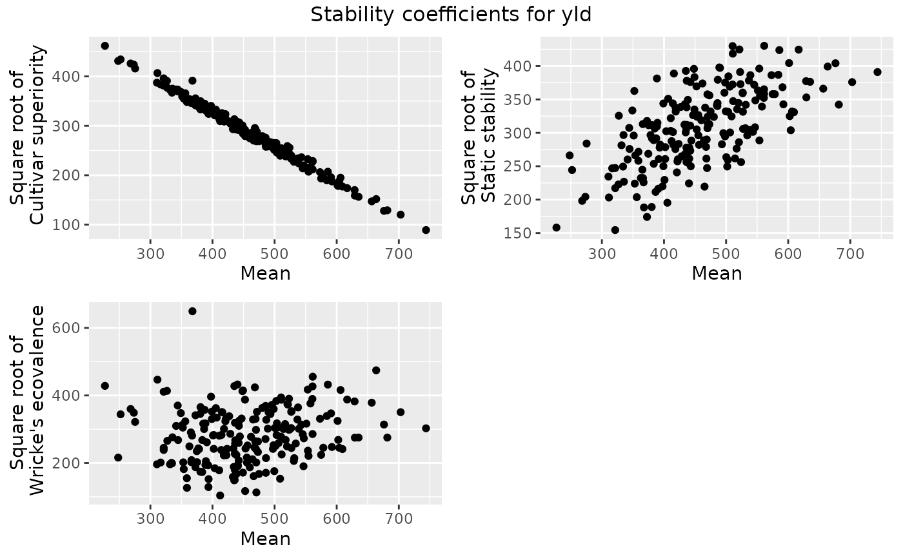

Calculate stability coefficients for genotype-by-environment data
Source:R/gxeStability.R
gxeStability.RdThis function calculates different measures of stability, the cultivar-superiority measure of Lin & Binns (1988), Shukla's (1972) stability variance and Wricke's (1962) ecovalence.
Arguments
- TD
An object of class
TD.- trials
A character string specifying the trials to be analyzed. If not supplied, all trials are used in the analysis.
- trait
A character string specifying the trait to be analyzed.
- method
A character vector specifying the measures of stability to be calculated. Options are "superiority" (cultivar-superiority measure), "static" (Shukla's stability variance) or "wricke" (wricke's ecovalence).
- bestMethod
A character string specifying the criterion to define the best genotype. Either
"max"or"min".- sorted
A character string specifying the sorting order of the results.
Value
An object of class stability, a list containing:
- superiority
A data.frame containing values for the cultivar-superiority measure of Lin and Binns.
- static
A data.frame containing values for Shukla's stability variance.
- wricke
A data.frame containing values for Wricke's ecovalence.
- trait
A character string indicating the trait that has been analyzed.
References
Lin, C. S. and Binns, M. R. 1988. A superiority measure of cultivar performance for cultivar x location data. Can. J. Plant Sci. 68: 193-198
Shukla, G.K. 1972. Some statistical aspects of partitioning genotype-environmental components of variability. Heredity 29:237-245
Wricke, G. Uber eine method zur erfassung der okologischen streubreit in feldversuchen. Zeitschrift für Pflanzenzucht, v. 47, p. 92-96, 1962
See also
Other stability:
plot.stability(),
report.stability()
Examples
## Compute three stability measures for TDMaize.
geStab <- gxeStability(TD = TDMaize, trait = "yld")
## Summarize results.
summary(geStab)
#>
#> Cultivar-superiority measure (Top 10 % genotypes)
#> Genotype Mean Superiority
#> G118 226.8275 213285.9
#> G076 251.9900 188640.3
#> G113 248.1250 185923.6
#> G140 268.2125 181521.7
#> G180 273.3250 179532.3
#> G073 275.3838 173008.6
#> G133 311.3375 165407.6
#> G112 321.4125 156828.7
#> G041 367.7250 153098.9
#> G008 326.6000 152794.6
#> G017 310.5500 149955.2
#> G090 316.5625 147096.2
#> G021 321.4625 147089.7
#> G004 321.4250 145401.7
#> G143 327.2750 142009.5
#> G139 335.4875 140698.0
#> G111 341.4250 139488.0
#> G126 344.0288 139351.6
#> G038 331.5750 139067.9
#> G095 334.0500 137072.9
#> G174 344.5500 136538.3
#> G211 349.0625 135962.9
#>
#> Static stability (Top 10 % genotypes)
#> Genotype Mean Static
#> G042 561.3875 185082.7
#> G091 510.4500 184739.4
#> G194 521.4250 180439.8
#> G055 616.8500 180228.1
#> G061 585.7500 179620.2
#> G103 510.8000 175153.7
#> G130 601.4000 163529.5
#> G192 676.1375 163323.5
#> G028 663.5625 159318.6
#> G037 489.1250 158294.3
#> G145 490.1750 157766.5
#> G172 553.3750 156891.8
#> G047 448.2125 156613.1
#> G009 435.2000 154190.1
#> G105 522.5500 152883.7
#> G019 743.8250 152822.0
#> G150 415.9125 151083.5
#> G168 584.1000 149636.8
#> G025 573.1375 149223.8
#> G082 539.0750 149223.6
#> G110 503.7375 147909.1
#> G117 449.1000 146968.8
#>
#> Wricke's ecovalence (Top 10 % genotypes)
#> Genotype Mean Wricke
#> G041 367.7250 421753.2
#> G028 663.5625 225014.0
#> G042 561.3875 207410.2
#> G133 311.3375 199560.4
#> G176 440.2000 187066.1
#> G061 585.7500 186751.7
#> G118 226.8275 183468.1
#> G009 435.2000 182984.1
#> G198 561.0750 182165.8
#> G114 468.2500 179699.9
#> G172 553.3750 174196.6
#> G045 606.2000 173102.0
#> G117 449.1000 172092.7
#> G008 326.6000 170986.0
#> G047 448.2125 170352.2
#> G112 321.4125 168838.3
#> G128 397.6375 157048.9
#> G091 510.4500 155332.5
#> G032 523.1375 152330.9
#> G077 560.8250 151845.0
#> G055 616.8500 150406.8
#> G086 452.3000 150102.7
## Create plot of the computed stability measures against the means.
plot(geStab)

# \donttest{
## Create a .pdf report summarizing the stability measures.
report(geStab, outfile = tempfile(fileext = ".pdf"))
#> Error in report.stability(geStab, outfile = tempfile(fileext = ".pdf")): An installation of LaTeX is required to create a pdf report.
# }
## Compute Wricke's ecovalance for TDMaize with minimal values for yield as
## the best values. Sort results in ascending order.
geStab2 <- gxeStability(TD = TDMaize, trait = "yld", method = "wricke",
bestMethod = "min", sorted = "ascending")
summary(geStab2)
#>
#> Wricke's ecovalence (Top 10 % genotypes)
#> Genotype Mean Wricke
#> G163 412.3125 10758.99
#> G190 470.6250 12696.93
#> G031 452.5750 13639.19
#> G138 358.8750 15972.32
#> G011 393.5125 16547.87
#> G049 434.9625 22109.51
#> G196 435.7000 22397.20
#> G040 393.7750 23161.62
#> G066 508.8500 23535.07
#> G173 358.7250 23986.23
#> G022 432.9000 25195.53
#> G057 466.2875 25888.58
#> G132 438.5000 27982.65
#> G003 474.9250 28050.84
#> G164 485.9625 29212.43
#> G052 449.0000 29389.23
#> G098 383.3625 29967.63
#> G188 380.5125 30302.95
#> G072 499.4875 30894.87
#> G070 410.7875 31783.30
#> G063 436.0875 32108.69
#> G015 353.7750 33050.07